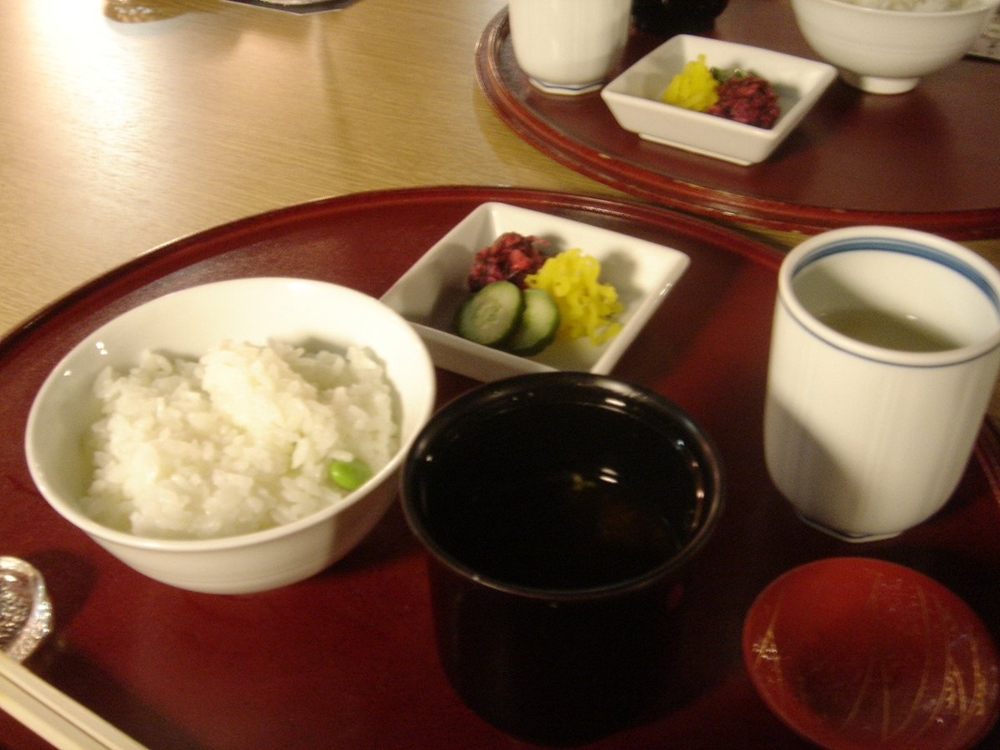
おばんざいランチ
1日限定15食。ドリンクとミニケーキ(手作り)のセットも選べます。
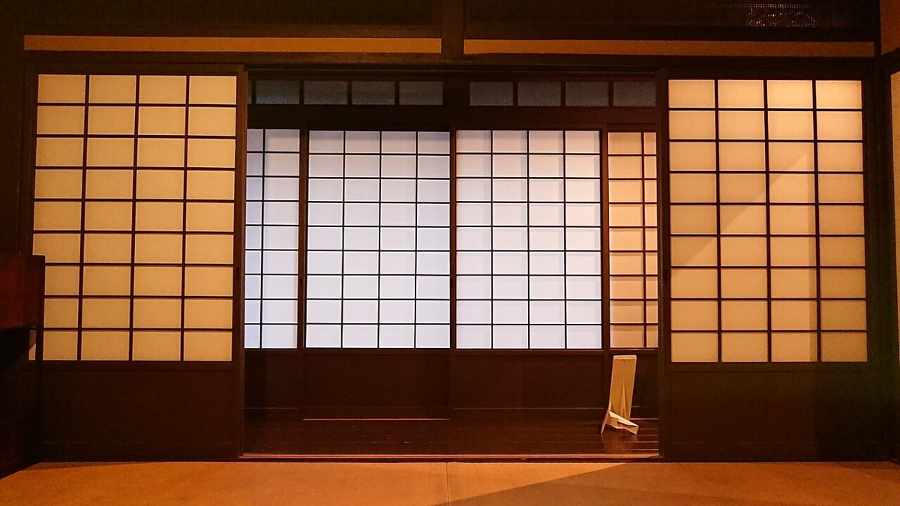
ABOUT
宇野のループ橋に近い、静かな住宅街。オーナーさんの実家を改装した古民家カフェです。
土壁と天井はそのまま残し、古さを生かした造りに。縁側から差し込む日差しが、どこか懐かしい空気をつくります。会計のカウンターは、押入れを解体してつくられたそうです。
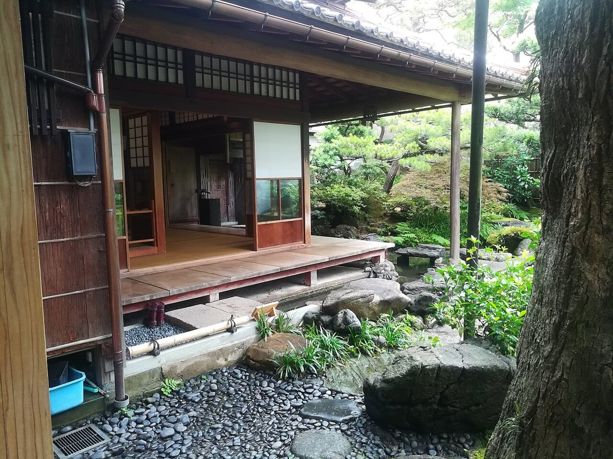
店名の由来やオーナーさんの想いは、公開情報では確認できませんでした。このページの文章は、確認できた事実をもとに制作側がイメージしてまとめたものです。
MENU
地元産の野菜を中心にした、季節のおばんざいランチ。豆皿に少しずつ盛られ、メイン料理は2週間ごとに替わります。化学調味料は使わず、出汁は毎日とっているそうです(出典:おかたび)。
料理は日により変わる場合があります。最新の内容は店舗のInstagramでご確認ください。写真はすべてイメージです。

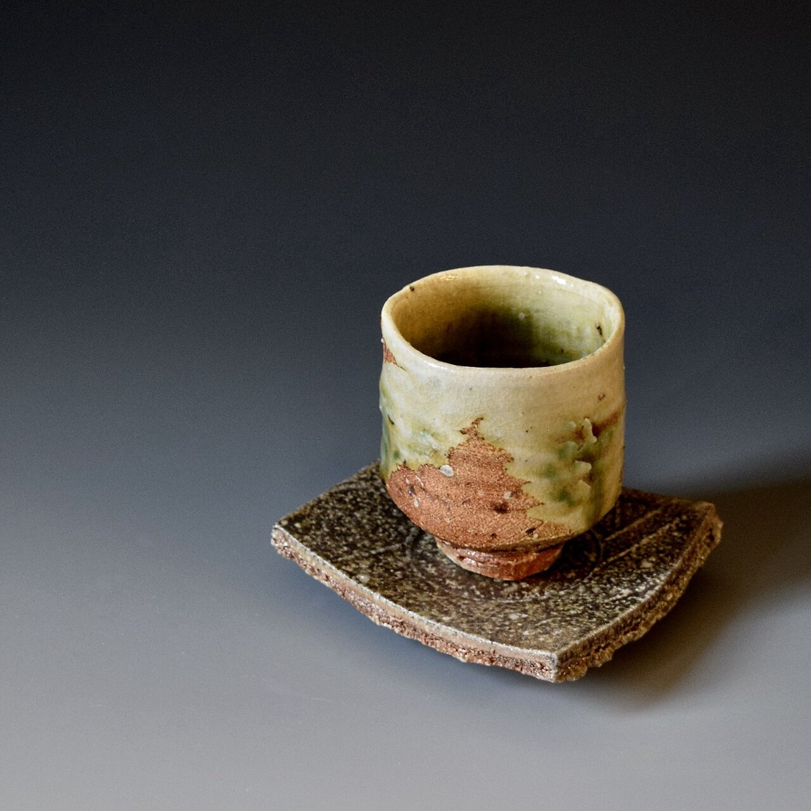
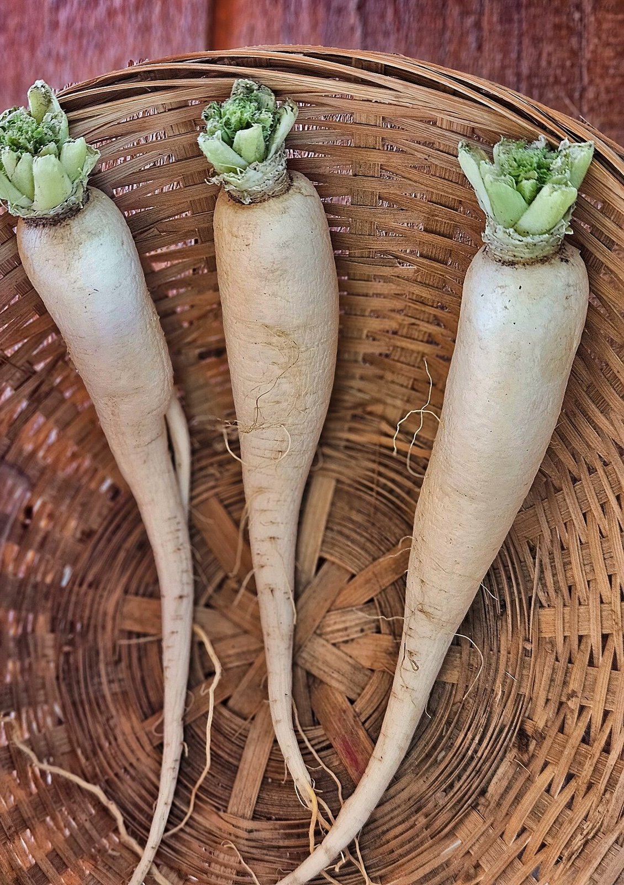
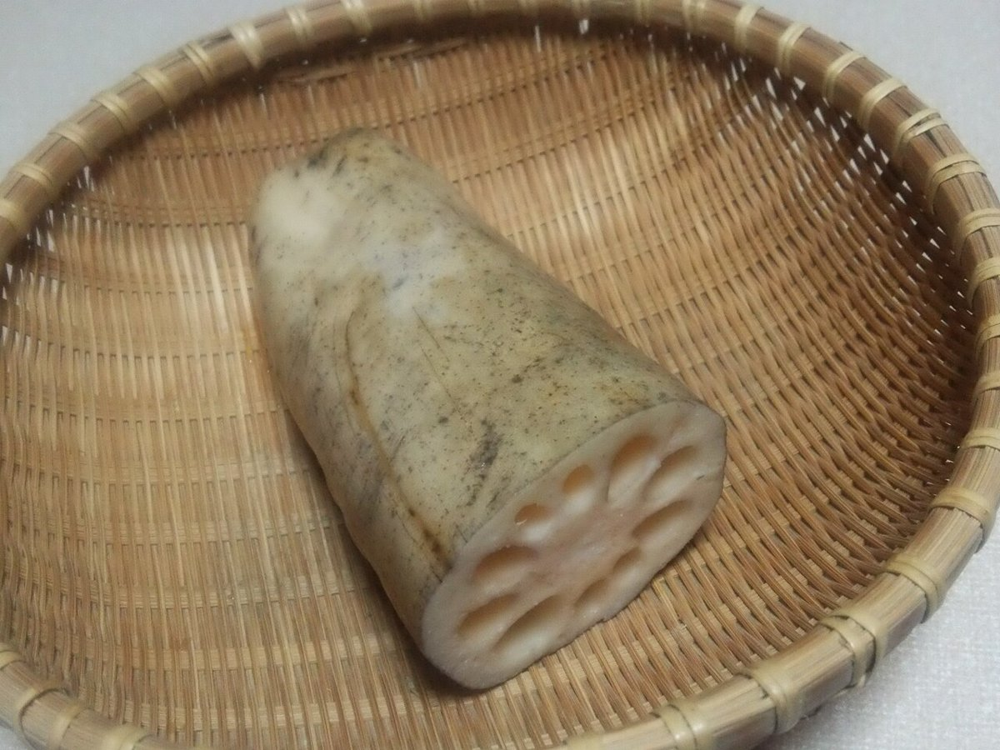
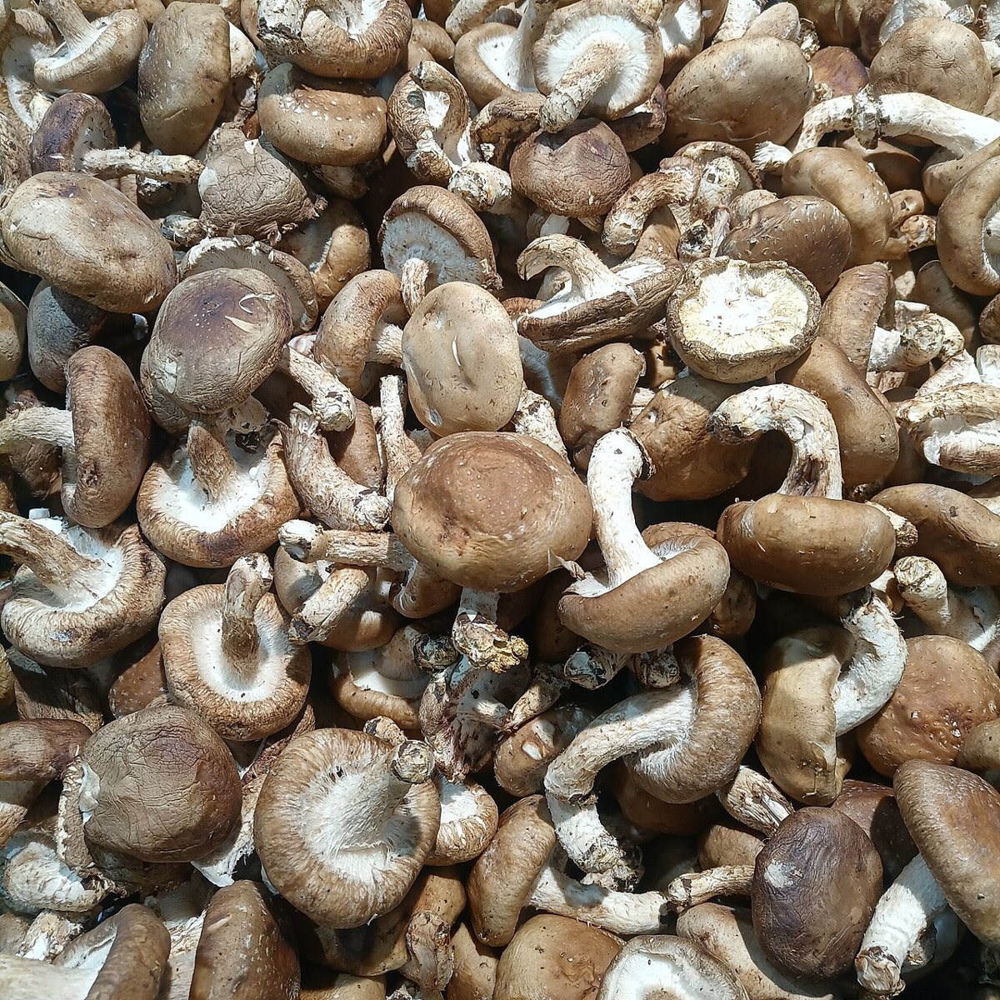
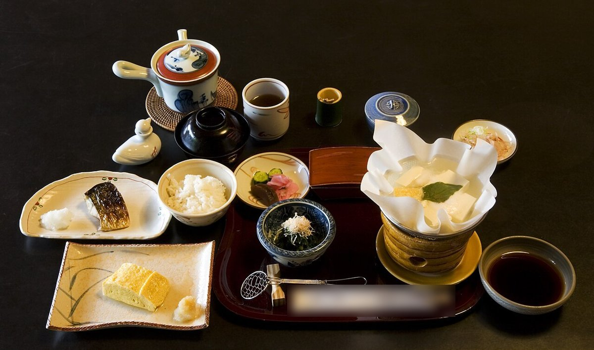
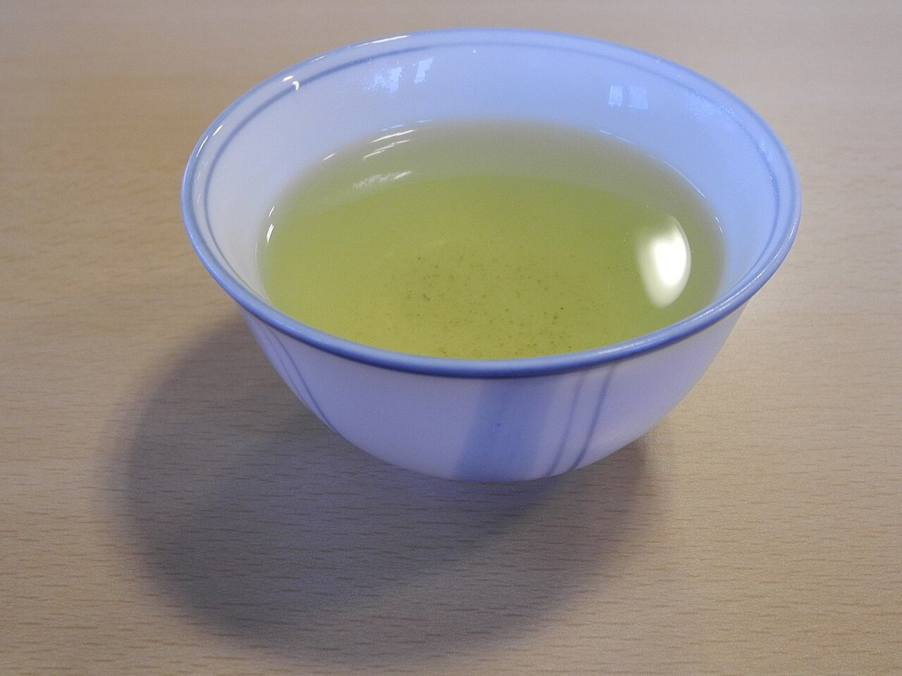
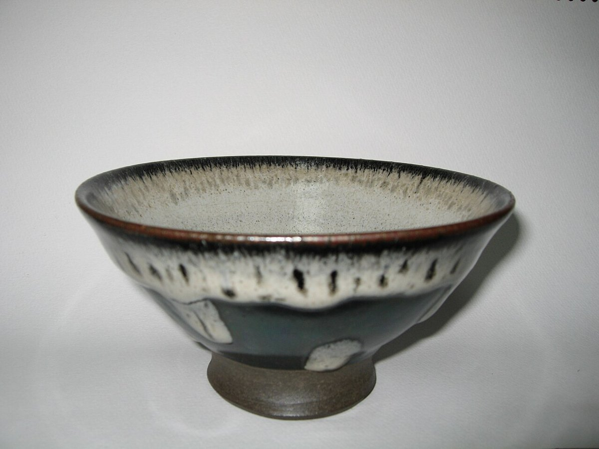
VOICE
縁側の光がやさしくて、豆皿のおかずを一つずつゆっくり味わいました。
ご来店のお客様(創作)実家に帰ったような落ち着く空間。出汁の味がしみじみおいしかったです。
ご来店のお客様(創作)食後のコーヒーとケーキまで手づくりで、つい長居してしまいました。
ご来店のお客様(創作)口コミは制作側が作成したイメージ例であり、実在のお客様の声ではありません。
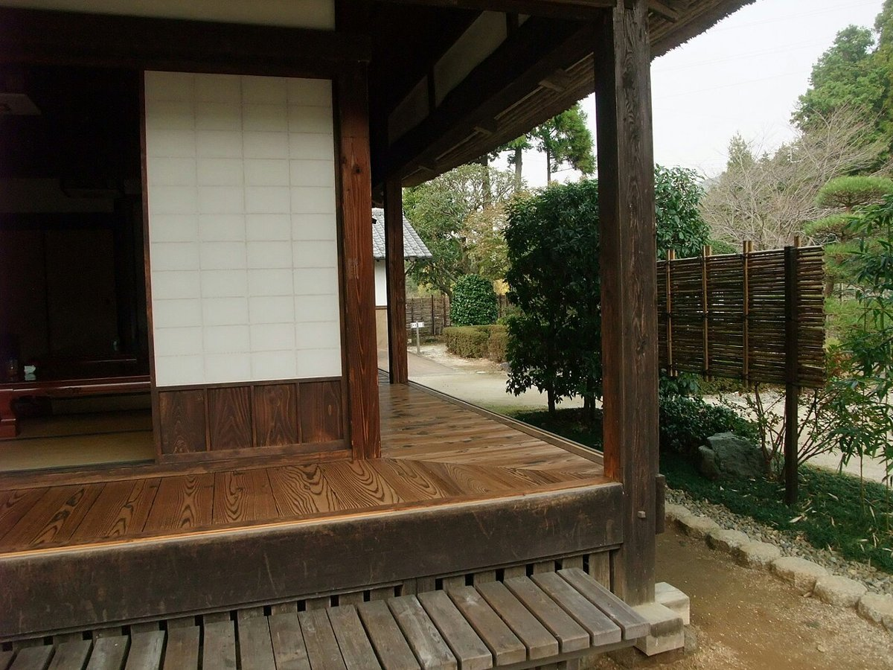
ACCESS
掲載写真はフリー素材のイメージで、店舗の実際の様子ではありません。他地域で撮影されたもの・撮影地不明のものを含みます